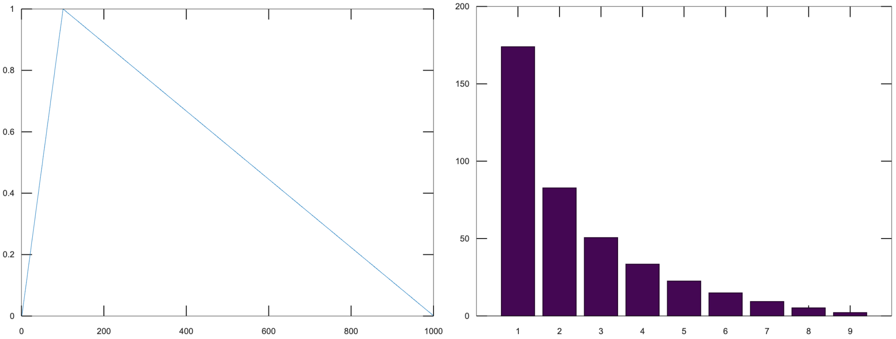

Acoustics Report TODO: Go back and add defs
Matt Dailis, Northeastern University MUSC2350, Spring 2020
Table of Contents
1 Section 1: Simulating Strings
My intent is to attempt to simulate a guitar using purely math.
I am using GNU Octave, an open source programming language and environment for mathematical modeling, based off of MATLAB.
Octave has an audioplayer function. If I provide it with a vector of floating point numbers between -1 and 1, it will treat them as a waveform and play them back for me.
audioplayer (vector, bit_rate, bit_depth)
A sample is a discrete measurement of sound pressure level (SPL).
bit_rate is the number of samples to play per second. I will set
this to be 441001.
I'm not sure what bit_depth means - it seems to have to do with the
precision of the floating point numbers themselves.
I will try to simulate a vibrating string by building it up as a sum
of partials. To start, I tried to make the fundamental frequency using
octave's sinewave function (See Listing 1). I can
provide it a vector size and a period, and it will return a set of
values between -1 and 1 in the form of a sine wave with a period that
I specify.
f1 = sinewave(bitRate * 4, bitRate / 440)
1.1 Pure tones and equal-amplitude harmonics
I defined my own convenience function puretone which would take the
bit rate, duration, and frequency and return the corresponding sine
wave (See Listing 2).
function puretone(seconds, frequency) sinewave(bitRate * seconds, bitRate/frequency); endfunction
Okay, now I have the ability to make pure tones, but I want
harmonics. A harmonic is a partial whose frequency is an integer
multiple of the fundamental. We usually only care about the first
six harmonics or so, because after that they start to get to very high
frequencies. Let's define a createharmonics function that returns a
sum of six harmonics (See Listing 3). Notice that
the returned vector must be divided by six to preserve the range of
values to be between -1 and 1.
createharmonics(duration, fundamental): f1 = puretone(duration, fundamental); f2 = puretone(duration, fundamental * 2); f3 = puretone(duration, fundamental * 3); f4 = puretone(duration, fundamental * 4); f5 = puretone(duration, fundamental * 5); f6 = puretone(duration, fundamental * 6); return (f1 + f2 + f3 + f4 + f5 + f6) / 6;
I created a sample song using this function
A3 = createharmonics(0.5, 220); A4 = createharmonics(0.5, 440); A5 = createharmonics(0.5, 880); B4 = createharmonics(0.5, 495); C4 = createharmonics(0.5, 523.26); D3 = createharmonics(0.5, 293.33); D4 = createharmonics(0.5, 293.33 * 2); D5 = createharmonics(0.5, 293.33 * 4); E3 = createharmonics(0.5, 330); E4 = createharmonics(0.5, 660); F5 = createharmonics(0.5, 348.84 * 2); GS4 = createharmonics(0.5, 415.305); aMinor = [A4, (C4 + E4) / 2, E3, (C4 + E4) / 2]; eMajor = [B4, (E4 + GS4) / 2, E3, (D4 + GS4) / 2]; dMinor = [A4, (D4 + F5) / 2, D3, (D4 + F5) / 2]; song = [aMinor, eMajor, aMinor, eMajor, dMinor, aMinor, eMajor, A4, E3, A3]; playSound(song, bitRate)
You can hear the result here:
While this is recognizably music, it sounds nothing like a guitar! What are we missing?
First off, in a string, the relative amplitudes of the harmonics are not all the same.2 Secondly, for a plucked instrument, the amplitudes of all of the harmonics change over time, eventually diminishing to silence.3 Lastly, the soundboard of the instrument will act as a filter affecting the output of the instrument.4 Let's tackle these one by one.
1.2 Relative amplitudes of harmonics
First off, the fundamental frequency of a plucked string will always be the most prevalent harmonic.5 The relative amplitudes of harmonics of a plucked string depend on the pluck location.
We model a pluck as a "kink" in the string.6 This initial location of this kink determines the relative amplitudes of the harmonics.7
If we take the fourier transform of the string, we should get an idea for which frequencies are represented. Let's first define the shape of our string.
Let's define a kink in terms of a piecewise function.
Let \(k\) be the kink location whose value is between \(0\) and \(1\), and \(L\) be the length of the string.
\[y_1={\frac x Lk}\]
\[y_2 = {\frac {1 - {\frac x L}} {1 - k}}\]
The following pairs of graphs show the kink function on the left, and its FFT on the right. The only axis worth looking at is the x axis of the FFTs - each number corresponds to the harmonic index.
These images were generated using octave-online with the following call:
v = kink(1000, 0.1) bar(abs(fft(v-mean(v)))(1:10)(2:end))
Figure 1: kink(0.5) and its FFT
Notice that the fundamental is always the most prominent, but the behavior of the rest of the harmonics varies. Observe Figure 1 - the pluck location is in the center of the string, which emphasizes odd harmonics, and has no even harmonics because all even harmonics have a node in the center.
Figure 2: kink(0.25) and its FFT
Moving the pluck location to the quarter point of the string (Figure 2), we see more harmonics pop up, but the fourth and eighth (and all multiples of four) are still silent, because the kink location is at the node of the fourth harmonic.

Figure 3: kink(0.1) and its FFT
In Figure 3, all nine of the first harmonics are present. The tenth is not pictured, but it would be zero, because it has a node at the pluck location.
This is the result of scaling the harmonics using the weights from the FFT:
It sounds a little better - the fundamental is more prominent than before. It still does not sound like a physical string though.
1.3 Damping
When one plucks a string, it does not sustain the sound for very long. Immediately, it starts to lose energy to friction at the imperfect boundaries of the string, as well as friction with the fluid (air) in which it is vibrating.8 I hope that adding damping will at least make it sound plausible that the strings are being plucked.
Let's start with the energy lost to the bridge, since that is more significant than the energy lost to the air.9 The way we take into account the bridge motion is by modeling it as an impedance mismatch, similar to how we would model a tube open on one end. This results in an exponential decay.
function y = damping(x, dampingTime, bitRate) y = 0.5 ^ (x / (dampingTime * bitRate)); endfunction
In this model, all of the frequencies decay at the same rate - but they started at different amplitudes.
1.4 Soundboard
Okay, we've now made a generic plucked string instrument, but what makes a guitar a guitar? One of the aspects that has the biggest contribution to the timbre of a stringed instrument is its soundboard. A soundboard is a resonance chamber that takes the input vibration from a string and transforms its frequency spectrum, behaving as an acoustic filter. In a guitar, the string transfers its vibration through the bridge and into the top of the guitar. The top of the guitar is an idiophone10 that creates a pressure wave inside the body as it vibrates. It is the modes of this piece of wood plus the sound propagation inside of the body that together create this acoustic filter.
"Richardson et al. [4] and Siminoff [5] have shown that the soundboard is the single most important component affect- ing the sound pressure level of the classical guitar."11
"The energy contained in a vibrating string is limited and the amplitudes of vibrations of relatively light guitar soundboards are relatively high in general, which is a desired feature"12
Figure 4: This diagram was taken from "Frequency Response Function Of A Guitar - A Significant Peak" By Samo SÌŒali